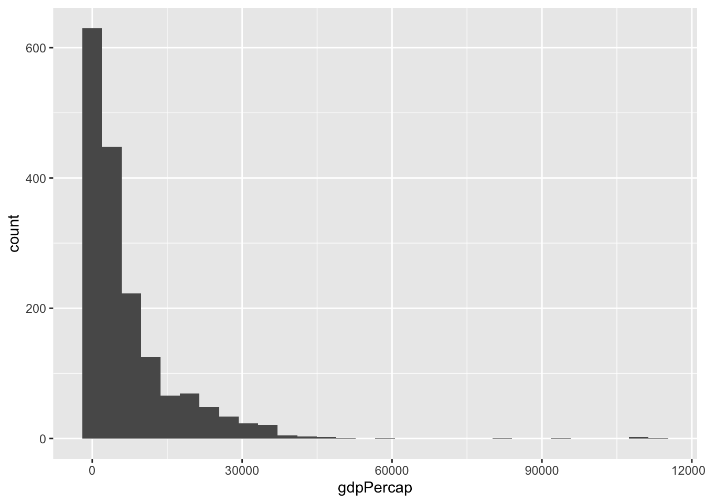

── Attaching core tidyverse packages ──────────────────────── tidyverse 2.0.0 ──
✔ dplyr 1.1.4 ✔ readr 2.1.5
✔ forcats 1.0.0 ✔ stringr 1.5.1
✔ ggplot2 3.5.0 ✔ tibble 3.2.1
✔ lubridate 1.9.3 ✔ tidyr 1.3.1
✔ purrr 1.0.2
── Conflicts ────────────────────────────────────────── tidyverse_conflicts() ──
✖ dplyr::filter() masks stats::filter()
✖ dplyr::lag() masks stats::lag()
ℹ Use the conflicted package (<http://conflicted.r-lib.org/>) to force all conflicts to become errors
Code
library(broom)
Now, let’s just take a quick peek at the gapminder dataset, an excerpt from the Gapminder data. The dataset shows information about population size, life expectancy and GDP (per capita) for a range of different countries from 1952 - 2007.
One thing we can notice is that gdp per capita has a long tail
Code
df %>%ggplot(aes(gdpPercap))+geom_histogram()
`stat_bin()` using `bins = 30`. Pick better value with `binwidth`.

Let’s log transform gdp per capita to make it more akin to a normal distribution
Code
df <- df %>%mutate(log_gdp_pc =log(gdpPercap))
That’s better
Code
hist(df$log_gdp_pc)
Predicting life expectancy from gdp per capita
Let’s fit a linear model predicting life expectancy from GDP per capita. Just for illustration’s sake, I’m going to focus on one particular year: 1977.
So it looks like there is a strong relationship between (log) GDP and life expectancy in the year 1977. How general is that pattern?
One way we could approach this is to just copy-paste the code above for each year, and look at the outcome. That seems pretty cumbersome and redundant though. Instead, we’ll use nest() and map() to handle this in just a few lines of code, all while keeping our data in a tidy format (!)
Using nest and map to look across many years
nest()
First, we use nest() to create a data frame in which each row contains the dataset for a particular year (nested within a cell!).
Code
nested <- gapminder %>%group_by(year) %>%nest()
Take a look at what the outcome looks like. We now have two columns, year and data. The data for a particular year is nested in the cell of each row.
Code
nested %>%glimpse()
Rows: 12
Columns: 2
Groups: year [12]
$ year <int> 1952, 1957, 1962, 1967, 1972, 1977, 1982, 1987, 1992, 1997, 2002,…
$ data <list> [<tbl_df[142 x 5]>], [<tbl_df[142 x 5]>], [<tbl_df[142 x 5]>], […
map()
Next, we use map() to execute a function in each row of a cell.
First, let’s define a quick function to fit a linear model on our data.
Code
fit_ols <-function(df) {lm(lifeExp ~ log_gdp_pc, data = df)}
Combine nest() and map()
Now, we can use map() to run the function (fit_ols()) fitting a linear model in each row of the nested data frame.
unnested_output %>%#remove the columns we don't wantselect(-data,-model) %>%#just show the effect of gdpfilter(term=="log_gdp_pc") %>% knitr::kable()
year
term
estimate
std.error
statistic
p.value
1952
log_gdp_pc
8.829813
0.6625915
13.32618
0
1957
log_gdp_pc
8.730598
0.6333668
13.78443
0
1962
log_gdp_pc
8.597827
0.6011185
14.30305
0
1967
log_gdp_pc
8.049757
0.5583525
14.41698
0
1972
log_gdp_pc
7.597430
0.4993213
15.21551
0
1977
log_gdp_pc
7.549041
0.4560659
16.55252
0
1982
log_gdp_pc
7.493593
0.3990243
18.77979
0
1987
log_gdp_pc
7.368595
0.3455803
21.32238
0
1992
log_gdp_pc
7.525306
0.3844216
19.57566
0
1997
log_gdp_pc
7.613136
0.3749190
20.30608
0
2002
log_gdp_pc
7.617203
0.4407672
17.28169
0
2007
log_gdp_pc
7.202802
0.4423393
16.28343
0
Plot
Here’s a nice companion plot to show what’s going on in the data. Note that we’re not using nesting here, we’re just taking advantage of ggplot’s facet_wrap() function
---title: "Nest and Map"format: html: code-fold: true code-tools: true toc: trueeditor: visual---The following tutorial will introduce you to a set of powerful functions in the tidyverse:- `nest()`- `map()`They are especially powerful when used in combination with each other## Load libraries and dataFor this exercise, we're going to use the Gapminder dataset```{r}#install.packages("gapminder")library(gapminder)library(tidyverse)library(broom)```Now, let's just take a quick peek at the [gapminder](https://cran.r-project.org/web/packages/gapminder/readme/README.html) dataset, an excerpt from the [Gapminder](https://www.gapminder.org/data/) data. The dataset shows information about population size, life expectancy and GDP (per capita) for a range of different countries from 1952 - 2007.```{r}df <- gapminderdf %>%glimpse()```One thing we can notice is that gdp per capita has a long tail```{r}df %>%ggplot(aes(gdpPercap))+geom_histogram()```Let's log transform gdp per capita to make it more akin to a normal distribution```{r}df <- df %>%mutate(log_gdp_pc =log(gdpPercap))```That's better```{r}hist(df$log_gdp_pc)```## Predicting life expectancy from gdp per capitaLet's fit a linear model predicting life expectancy from GDP per capita. Just for illustration's sake, I'm going to focus on one particular year: 1977.```{r}df_77 <- df %>%filter(year ==1977)fit <-lm(lifeExp ~ log_gdp_pc, data = df_77)summary(fit)```You can use the broom package to get a "tidy" output and the `kable()` function in knitr to get a clean-looking table```{r}fit %>% broom::tidy() %>% knitr::kable()```Plot it!```{r}ggplot(df_77,aes(log_gdp_pc,lifeExp))+geom_point()+geom_smooth(method="lm")```So it looks like there is a strong relationship between (log) GDP and life expectancy in the year 1977. How general is that pattern?One way we could approach this is to just copy-paste the code above for each year, and look at the outcome. That seems pretty cumbersome and redundant though. Instead, we'll use `nest()` and `map()` to handle this in just a few lines of code, all while keeping our data in a tidy format (!)## Using nest and map to look across many years### nest()First, we use [`nest()`](https://tidyr.tidyverse.org/reference/nest.html) to create a data frame in which each row **contains the dataset for a particular year** (nested within a cell!).```{r}nested <- gapminder %>%group_by(year) %>%nest()```Take a look at what the outcome looks like. We now have two columns, year and data. The data for a particular year is nested in the cell of each row.```{r}nested %>%glimpse()```### map()Next, we use [`map()`](https://purrr.tidyverse.org/reference/map.html) to execute a function in each row of a cell.First, let's define a quick function to fit a linear model on our data.```{r}fit_ols <-function(df) {lm(lifeExp ~ log_gdp_pc, data = df)}```### Combine nest() and map()Now, we can use `map()` to run the function (`fit_ols()`) fitting a linear model in each row of the nested data frame.```{r}nested_fit <- df %>%group_by(year) %>%nest() %>%mutate(model=map(data,fit_ols))```We've created a new column that holds the model fit for each of our linear models (per year).Finally, we can use the [`tidy()`](https://broom.tidymodels.org/) function in broom to summarize the model outputs into a neat format. Again we use map```{r}nested_output <- nested_fit %>%mutate(output =map(model,broom::tidy))```Finally, we use unnest() the output back into a neat dataframe.```{r}unnested_output <- nested_output %>%unnest(output)```Et voila!! A clean table of model outputs```{r}unnested_output %>%#remove the columns we don't wantselect(-data,-model) %>%#just show the effect of gdpfilter(term=="log_gdp_pc") %>% knitr::kable()```### PlotHere's a nice companion plot to show what's going on in the data. Note that we're not using nesting here, we're just taking advantage of ggplot's `facet_wrap()` function```{r}ggplot(df,aes(log_gdp_pc,lifeExp))+geom_point()+geom_smooth(method="lm")+facet_wrap(~year)```